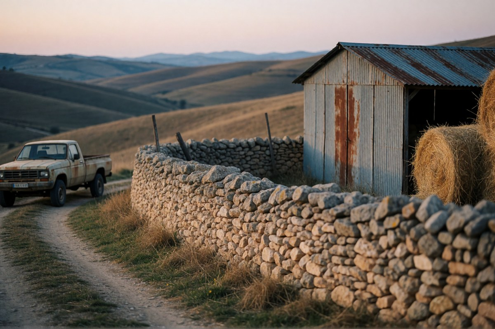

Sicilia · 14 novembre 2026
Omicidio di Gangi, fermato il dipendente: avrebbe confessato

Mauro Ferrarello, 35 anni, è accusato dell'omicidio dell'imprenditore agricolo Gaetano Alessandro Barreca. Per gli inquirenti il movente sono tre mensilità di stipendio non pagate.
di Franco Zanghì
Mauro Ferrarello, 35 anni, è stato fermato per l'omicidio di Gaetano Alessandro Barreca, l'imprenditore agricolo di Gangi ucciso a colpi d'arma da fuoco fra il 31 ottobre e il primo novembre. Avrebbe confessato. Il fermo è stato disposto dalla Procura di Termini Imerese, l'accusa è omicidio volontario aggravato e Ferrarello era un dipendente della vittima: il solo dipendente stabile dell'azienda agricola.
Dove e come
Siamo a Gangi, sulle Madonie, in provincia di Palermo. L'azienda è in contrada Rolica, quasi al confine con la provincia di Enna: lì Barreca, 54 anni, era stato trovato morto accanto al suo fuoristrada. I carabinieri sono arrivati al dipendente attraverso le testimonianze, le immagini delle telecamere e l'analisi dei telefoni. Poi la svolta: in un casolare vicino al luogo del delitto sono stati trovati un fucile e una pistola, entrambi rubati, insieme a guanti in lattice, un binocolo e una maglietta; la custodia del binocolo è stata trovata in casa sua. I reperti sono passati al Ris.
Negli interrogatori il racconto dei suoi spostamenti non tornava. Quando le indagini si sono concentrate su di lui, Ferrarello si è reso irreperibile per tre giorni: i carabinieri lo hanno rintracciato in un fabbricato rurale in disuso nelle campagne di Calascibetta, in provincia di Enna.
Il movente ricostruito dagli inquirenti
Secondo la Procura all'origine del delitto c'è il rapporto di lavoro: tre mensilità di stipendio non pagate, per una somma fra 2.400 e 3.000 euro, su una paga di 800-1.000 euro al mese. Ai pubblici ministeri Ferrarello ha detto che il datore di lavoro «mi vessava», che litigavano da tempo per le condizioni di lavoro e per i soldi e che aveva pensato di lasciare il posto rinunciando a quanto riteneva ancora dovuto. Dice di aver agito da solo: gli investigatori stanno verificando. Per gli inquirenti l'agguato fu pianificato: il pomeriggio del delitto si sarebbe appostato in un capanno della tenuta per circa due ore, poi avrebbe sparato quattro colpi, ricaricando dopo i primi due.
Pochi giorni dopo il delitto, davanti alle telecamere, Ferrarello parlava della vittima come di un amico, diceva di non averla vista né sentita quel giorno e aveva partecipato alle ricerche, sostenendo di aver trovato il corpo. Il racconto è stato giudicato incoerente dagli investigatori. I suoi legali starebbero valutando la richiesta di una perizia psichiatrica. Per Ferrarello vale la presunzione d'innocenza fino a sentenza definitiva.
Il punto
Un imprenditore ucciso nella sua azienda e, due settimane dopo, il fermo del suo dipendente, che avrebbe confessato. Non è una storia di criminalità organizzata: è una storia di lavoro, di soldi contati e di rancore cresciuto in silenzio in una campagna dove, fra padrone e operaio, non c'era nessun altro.
Fonti
- ANSA, «Omicidio dell'imprenditore Barreca, fermato un suo dipendente», 14 novembre 2026
- Giornale di Sicilia, «Mi vessava e l'ho ucciso: la svolta nel delitto Barreca a Gangi», 15 novembre 2026
- Giornale di Sicilia, «Ucciso per tremila euro: ecco perché il delitto Barreca», 17 novembre 2026
- Diretta Sicilia, «Il delitto nato da tre stipendi non pagati e un agguato pianificato», 17 novembre 2026
- MadoniePress, le dichiarazioni del sindaco di Gangi, novembre 2026
- BlogSicilia, l'intervista a Ferrarello nei giorni successivi al delitto, novembre 2026
Gli atti dell'indagine sono coperti dal segreto istruttorio e le cifre del movente sono quelle riferite dalla stampa locale. Alla data di pubblicazione l'udienza di convalida del fermo era attesa per il 18 novembre 2026.